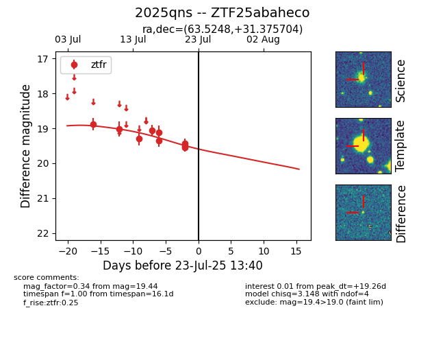

Target ZTF25abaheco at 2025-07-23 13:40, see:
FINK: fink-portal.org/ZTF25abaheco
Lasair: lasair-ztf.lsst.ac.uk/objects/ZTF25abaheco
ALeRCE: alerce.online/object/ZTF25abaheco
TNS: wis-tns.org/object/2025qns
YSE: ziggy.ucolick.org/yse/transient_detail/2025qns
alt names
ZTF25abaheco (ztf,fink)
2025qns (tns,yse)
coordinates:
equatorial (ra, dec) = (63.5248,+31.37570)
galactic (l, b) = (165.8519,-14.13579)
photometry
last ztfr=19.44
9 ztfr detections
